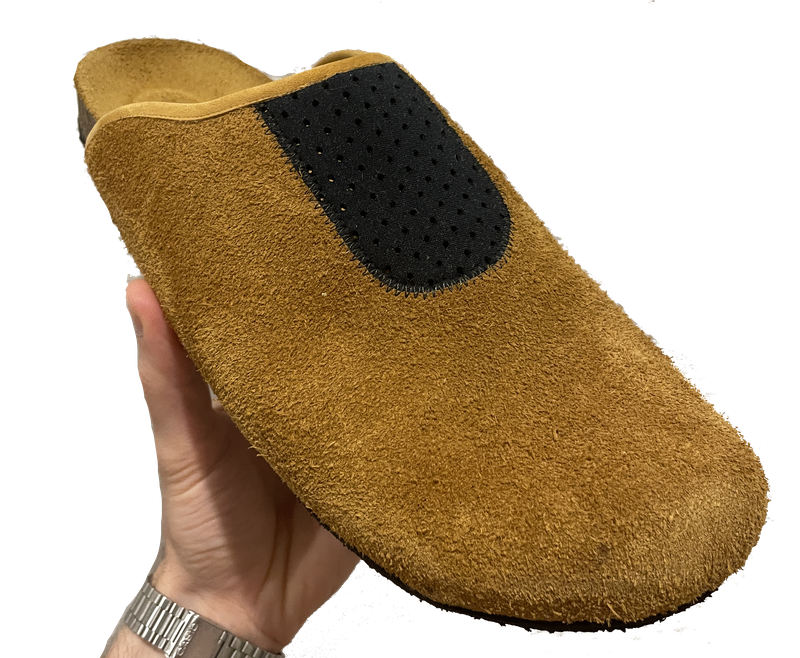
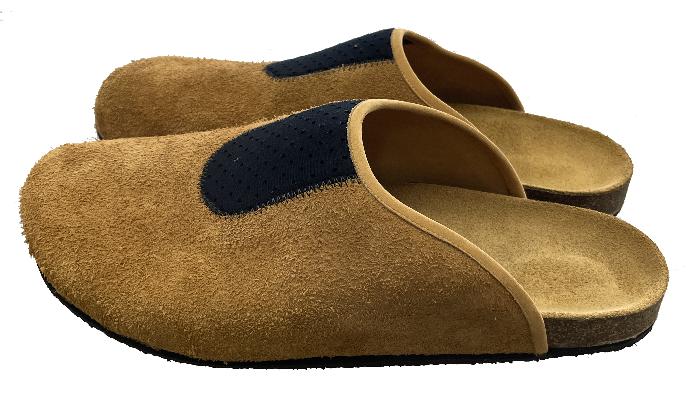
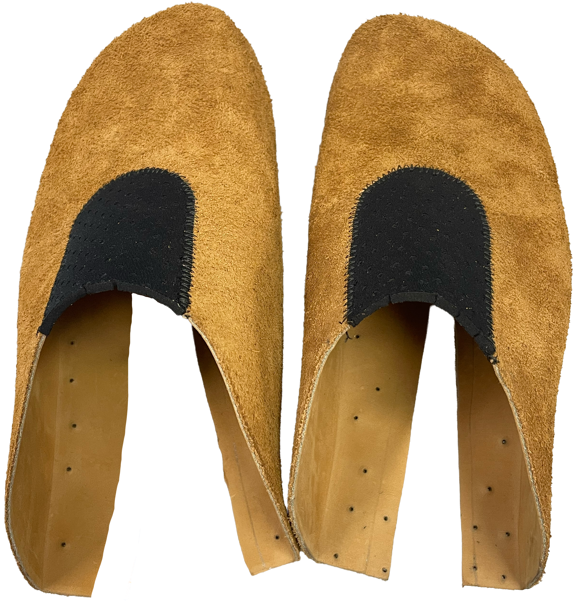
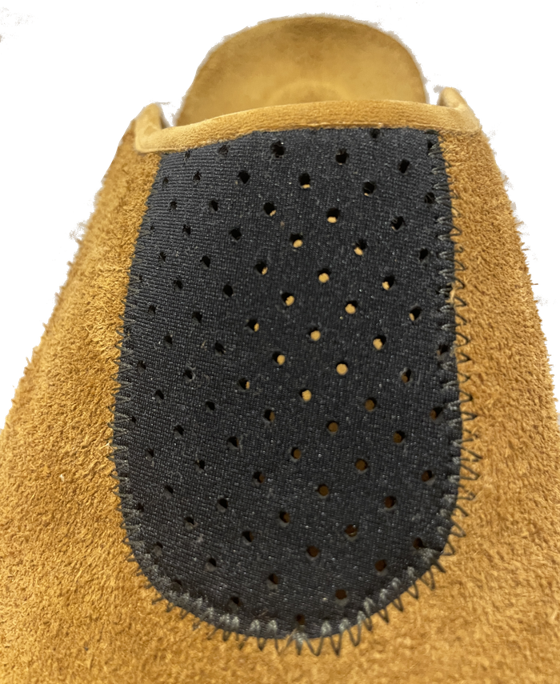
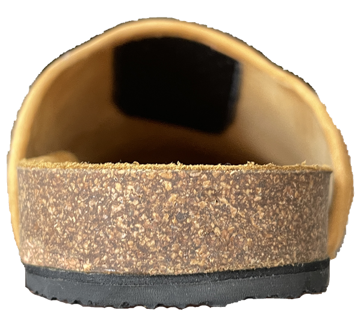
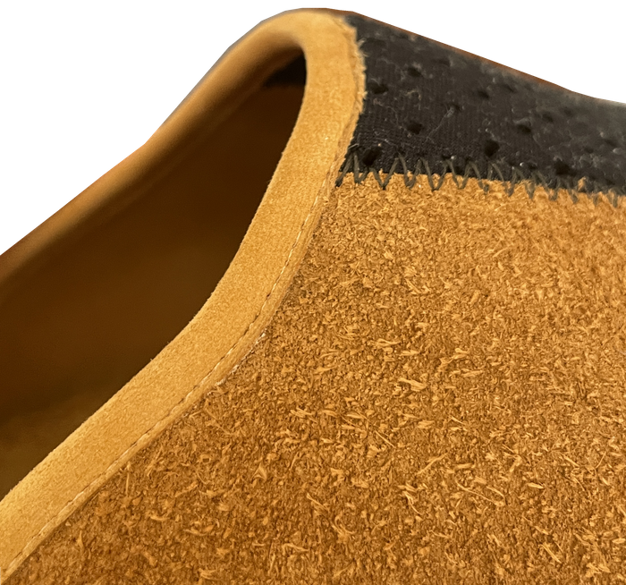

NeoVent Clog
Custom-made footwear development






NeoVent Clog
Custom-made footwear
- Upper
- Full grain leather, roughout suede facing out, wet moulded to the last
- Footbed
- Cork footbed midsole
- Binding
- Custom edge binding, split from the same leather
- Outsole
- Svig Crespone rubber
- Patternmaking
- Last Drafting
- Leather Splitting
- Edge Binding
- Wet Moulding
Made for the RMIT end-of-year showcase, right after Hiker1. I wanted something comfortable to wear around the house or put on after a day of sewing. I drafted a last and worked out the design by drawing straight onto it, taking cues from the rugged, experimental look of Oakley Factory Team footwear and the shape of the Birkenstock Boston.